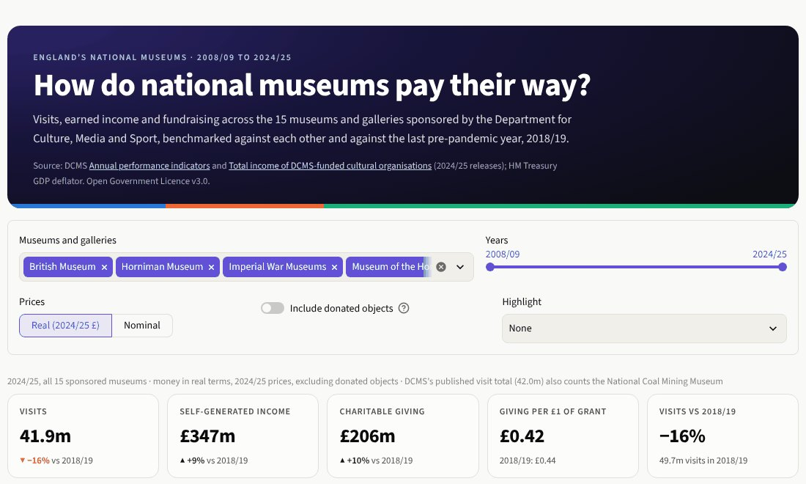
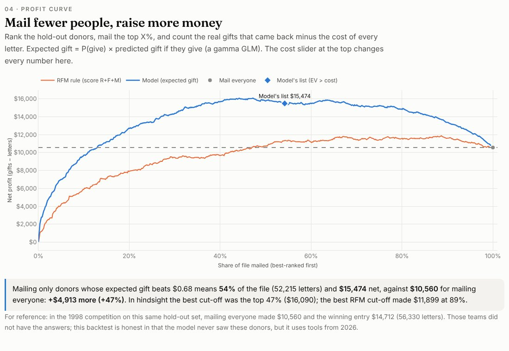
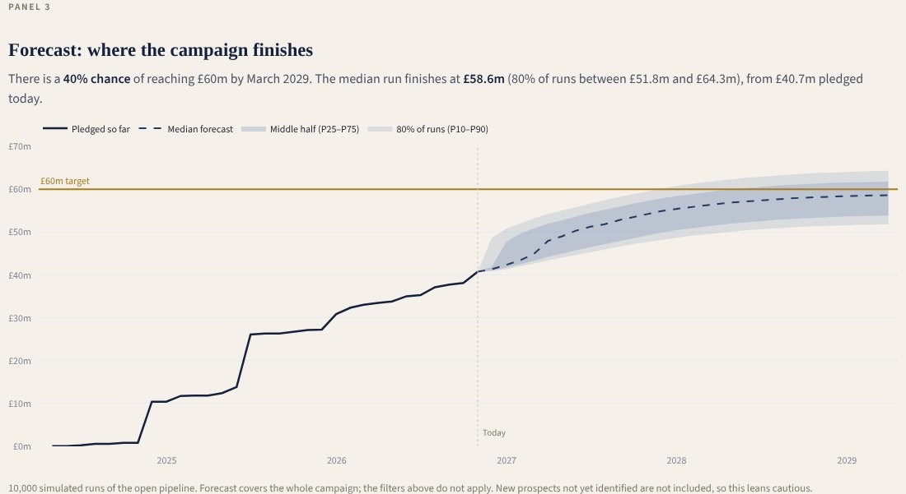
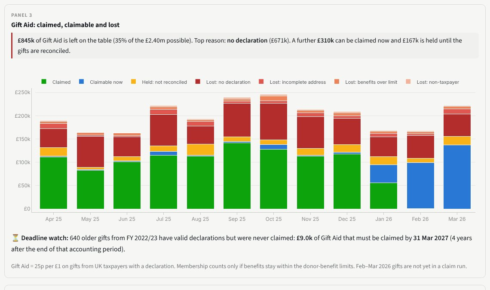
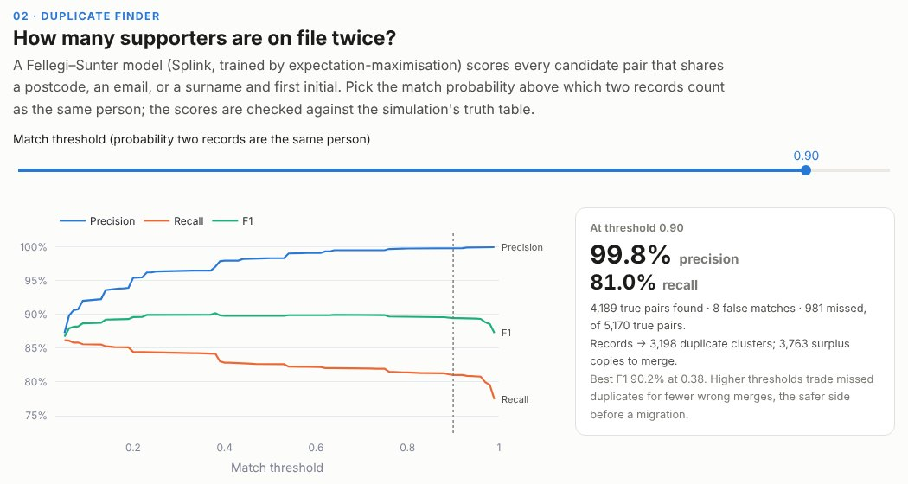
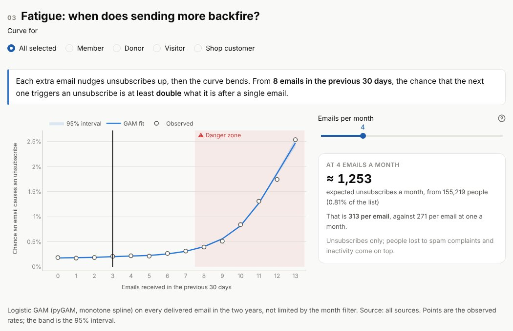

How charities raise money, look after their supporters and account for every pound. One dashboard uses official statistics on England's national museums, one a real direct-mail appeal, and four a fictional museum charity built on simulated data.
All six are live. Every image, title and button opens the dashboard. Apps can take up to 30 seconds to wake.
How do England's national museums pay their way? Compare visitors, earned income and fundraising across 15 national museums and galleries, before and after the pandemic.
£0.42of charitable giving for every £1 of government grant in 2024/25, down from £0.44 in 2018/19
Official DCMS figures from 2008/09 to 2024/25 in real terms. Follow each museum's recovery since 2018/19, split self-generated income into admissions, trading and giving, set scale against fundraising, and rank museums in a league table.
Which past donors are worth asking again? See how supporters lapse, who responds to an appeal and how much more an appeal earns when it targets the right people.
Real data · 1997 direct-mail appeal, 191,779 lapsed donors
Will a museum's fundraising campaign reach its target? See the gifts still needed, the pledge pipeline and a forecast of the finish, and test what would change the odds.
Does every pound a charity receives reach its records, and how much Gift Aid is going unclaimed? Follow income from bank to database, work the exceptions queue and spot unusual days.
How healthy is a charity's email list? See open rates with privacy-inflated opens removed, how fast subscribers drift away, when sending more backfires and how much of the list has valid consent.
How do England's national museums pay their way, and how far have visits and fundraising recovered since the pandemic?
Data
DCMS sponsored museums annual performance indicators 2024/25; DCMS total income of DCMS-funded cultural organisations (2023/24 and 2024/25 releases); DCMS monthly visits to June 2026; HM Treasury GDP deflators (October 2026 Budget). Crown copyright, Open Government Licence v3.0.
Method
Self-generated income = admissions + trading (net profit) + charitable giving. Grant-in-aid is shown separately.
Real terms in 2024/25 prices using GDP deflators, with a switch to nominal.
Donated objects are taken out of fundraising by default, because a few large gifts of objects would swamp the cash figures. In 2024/25 the British Museum alone recorded about £915m of donated objects.
Recovery is each museum's visits or income indexed to 2018/19 = 100. Medians and quartiles always use all 15 museums.
Volatility is the coefficient of variation of each income stream over the eight years to the chosen end year.
Museum totals match DCMS's published totals exactly from 2015/16.
Main results
In 2024/25 the 15 museums had 41.9m visits, 16% below 2018/19, and only 6 of 15 had more visitors than before the pandemic. Self-generated income was £347m, 9% higher in real terms. Charitable giving was £206m (+10%), 59% of self-generated income, with admissions and trading at 20% each. Every £1 of grant-in-aid was matched by £0.42 of giving (£0.44 in 2018/19). The National Gallery raised the most per visit (£12.71, against a median of £3.80). For the typical museum, trading was the most volatile income stream.
What you can explore
Choose museums, years, real or nominal prices, and whether to include donated objects. Highlight one museum across the recovery lines, the income mix (£, £ per visit or % share), the scale-versus-fundraising chart, the league table with quartile shading and trend lines, and the volatility chart.
Caveats
The Museum of the Home was closed from 2018 to 2021, so its recovery index is about 470 and shown off the scale.
DCMS visit totals also count the National Coal Mining Museum, which is not one of the 15 (41.9m here against DCMS's 42.0m). Tyne and Wear Museums are excluded, so totals before 2015/16 are a few per cent below DCMS's.
Trading is net profit and can be negative. Fundraising figures depend heavily on how donated objects are treated.

The dashboard's headline figures for 2024/25: all 15 museums, real terms, excluding donated objects.Back to top ↑
02
Donor Retention Lab
US direct-mail appeal, June 1997 · 191,779 lapsed donors · real data
Which past donors are worth writing to again, and how much more does a targeted appeal raise than mailing everyone?
Data
The KDD Cup 1998 data set (UCI Machine Learning Repository, CC BY 4.0): an appeal by a US national veterans organisation to donors who had stopped giving. The learning file (95,412 donors) trains the models; the validation file (96,367 donors), with its answers, tests them. Values are in US dollars and not adjusted for inflation.
Method
An RFM map of response by recency and frequency, with circles sized by average gift.
Retention: a cohort heatmap by year of first gift, and Kaplan–Meier curves of active giving by gift size (lapsed = no gift for 24 months).
Who responds: a LightGBM model compared with logistic regression on RFM alone, checked for calibration, with SHAP for the main drivers.
How much: a gamma GLM for gift size. Expected gift = chance of giving × predicted gift; a donor is mailed when the expected gift beats the $0.68 cost of a letter.
A profit curve on the hold-out donors, against an RFM scoring rule and mailing everyone.
Main results
Mailing every hold-out donor nets $10,560, the same figure published for the 1998 competition. Mailing only the model's list (52,215 letters, 54% of the file) nets $15,474, which is $4,913 or 47% more. The best RFM-rule cut-off makes $11,899; the published competition winner made $14,712. The model ranks donors better than RFM alone (AUC 0.629 against 0.601). The best RFM cell, donors with 4+ gifts whose last gift was within 14 months, responded at 14.3%, four times the weakest cell. Small-gift donors give more often and stay longer: a median active life of 6.2 years under $10, against 1.1 years at $25 and over.
What you can explore
Filter by area type, age and gift size, and change the cost of a letter. Every chart updates: the RFM map, retention, the response drivers and calibration, the profit curve, and a lookup that shows one donor's history and whether they would get a letter.
Caveats
Response is rare (about 5%) and noisy. Even the top tenth of donors gives only about 1 time in 9.
The best cut-off in hindsight is chosen on the test set and labelled as such.
The gift size band uses each donor's average gift, because the file has no first-gift amount.
This is 1990s US data, and the models use 2026 tools, so the comparison with the 1998 entrants is not like for like.

Net income on the hold-out donors by share of the file mailed: the model's list against an RFM rule and mailing everyone.Back to top ↑
03
Campaign Gift Tracker
Fictional Northgate Museum · £60m campaign, April 2024 – March 2029 · position at 31 October 2026 · simulated data
Will a capital campaign reach its £60m target, which gifts are still missing, and what would change the odds?
Data
Simulated (fixed seed): prospects, their stage histories, pledges and instalments for a fictional museum's New Galleries Campaign. No real donors or institutions appear.
Method
A gift pyramid of seven bands, from one £9m lead gift down, halving in size and doubling in number.
Stage conversion as a Beta-binomial model for each segment and stage; a prospect's chance of pledging is the product of the forward rates from its current stage.
Close dates drawn from the stage-duration history, allowing for time already spent in the stage.
A 10,000-run Monte Carlo that also draws the conversion rates, so their uncertainty is included. The what-if panel re-runs 2,000 simulations with common random numbers.
Cash from instalment schedules, with a 3% write-off and Gift Aid at 25% on eligible individual gifts.
Main results
At 31 October 2026, £40.7m was pledged (68% of target), £19.4m had arrived in cash (plus £983k Gift Aid), and 206 open prospects made up a weighted pipeline of £21.1m. The chance of reaching £60m by March 2029 is 40%, with a median finish of £58.6m and an 80% range of £51.8m to £64.3m. The biggest gap is the £4.5m band: none of its 2 gifts is secured and none is in the pipeline. Ten points more solicitation success lifts the odds to 62%; five new £1m prospects to 50%; a six-month delay drops them to 36%.
What you can explore
Filter by segment and fundraiser. See the gift pyramid, the pipeline funnel by value or count, the forecast fan, what-if sliders, pledges against cash to 2031, and the next 20 asks with a flag for prospects stuck in a stage.
Caveats
All data is simulated; the story was tuned so that the odds sit near 40%.
Prospects not yet identified are not modelled, so the forecast leans cautious.
The filters do not apply to the forecast or the what-if panel, which always cover the whole campaign.

Pledges so far and the forecast range of finishes to March 2029, against the £60m target.Back to top ↑
04
Income Reconciliation Room
Fictional Northgate Museum · financial year 2025/26 · 123,668 bank lines · simulated data
Does every pound a charity receives reach its supporter database, and how much Gift Aid is claimed, still claimable or lost?
Data
Simulated (fixed seed): a year of bank lines, CRM gifts, giving-platform payouts and Gift Aid declarations across nine channels, with seven planted events such as a payment outage and a Giving Tuesday appeal. Gift Aid rules from gov.uk, checked 18 November 2026.
Method
A three-pass matcher: exact (amount, date and reference), fuzzy (text similarity on references, with a guard against generic references) and bundled (platform payouts split into their gifts).
Matches with confidence below 0.80 go to an exceptions queue with a suggested match and a reason.
Gift Aid status for every gift, including the donor-benefit limits and the four-year claim deadline.
Processing time from bank receipt to CRM entry, against a five-working-day target.
Unusual days: seasonal-trend decomposition of daily income, then a robust z-score beyond 3.5.
Main results
Of £21.51m received, 94.0% is reconciled by value; £1.29m in the bank has no CRM gift, and £1.19m in the CRM has no money in the bank. The exceptions queue holds 13,270 items, 80% with a suggested match. Gift Aid of £1.08m was claimed out of £2.40m possible; £845k is lost, £671k of it for lack of a declaration, and £9.0k from 2022/23 must be claimed by 31 March 2027. 85% of receipts were entered within five working days. The monitor flagged 26 days, including all seven planted events. Overall matcher precision is 99.8% and recall 96.7%.
What you can explore
Choose months and channels. Check that the reconciliation waterfall ties to the penny, sort and download the exceptions queue, break Gift Aid down by month and reason, compare processing speed by channel, and step through the daily income monitor one channel at a time.
Caveats
All data is simulated; matcher quality can be measured only because the true links are known.
Direct Debits, platform payouts, legacies and major gifts arrive on fixed dates or in large one-offs, so they are not monitored day by day.
Gift Aid rules are applied as published, assuming a 31 March year end. This is not tax advice.

Gift Aid by month: claimed, claimable now, held until reconciled, and lost by reason.Back to top ↑
05
CRM Data Quality Audit
Fictional Northgate Museum · 50,737 supporter records from four systems · simulated data
Is a charity's supporter database ready to move to a new CRM: how many duplicates, how clean, how risky, and what does bad data cost?
Data
Simulated with Faker (en_GB) and a fixed seed, with planted duplicates (nicknames, house moves, swapped names) and a truth table to check against. Every record is invented; tables show IDs where possible.
Method
Probabilistic record linkage (Fellegi–Sunter, with Splink and DuckDB), trained by expectation-maximisation. Candidate pairs share a postcode, an email, or a surname and first initial; nicknames are mapped to formal names first.
Precision and recall against the truth table at every match threshold.
A scorecard of six dimensions (completeness, validity, uniqueness, consistency, timeliness, accuracy) for each source system.
Six weighted compliance flags inspired by UK GDPR and PECR, an annual cost model, and migration rules before and after an automated clean-up.
Main results
At a threshold of 0.90 there are about 3,763 surplus duplicate records (7.4%) in 3,198 clusters, found with 99.8% precision and 81.0% recall. Overall quality scores 90 out of 100; the weakest cell is timeliness in the old CRM (55). 23,148 records carry compliance flags, 3,074 of them high-risk. Bad data costs about £24.8k a year at the default assumptions. 70% of records pass every migration rule, 84% after clean-up; missing consent evidence remains the main blocker.
What you can explore
Filter by source system and supporter type. A single threshold slider drives the whole page. See example duplicate clusters, the highest-risk records (IDs only), cost sliders for mailings and pack costs, and the old-to-new field mapping.
Caveats
All data is simulated. Missed duplicates are mostly people who moved house and changed email, so they share no key.
The compliance rules are illustrative, not legal advice.
The cost figure leaves out staff time, reputational harm and fines, so it is a floor.

Duplicate finder: precision, recall and F1 by match threshold, with the result at 0.90.Back to top ↑
06
Email Consent Health
Fictional Northgate Museum · November 2024 – October 2026 · about 300,000 people, 200 campaigns · simulated data
How healthy is a charity's email list once privacy-inflated opens are removed, how fast do subscribers drift away, when does sending more backfire, and how much of the list has valid consent?
Data
Simulated (fixed seed); only aggregated tables are stored. Rules checked on 18 November 2026: Gmail asks bulk senders to keep spam complaints below 0.3% (ideally 0.1%), and the PECR charitable-purpose soft opt-in has been in force since 5 February 2026.
Method
Apple Mail Privacy Protection opens flagged by a heuristic (Apple Mail, Apple proxy, opened within two minutes, no click), scored per person per campaign.
Kaplan–Meier curves of how long subscribers stay reachable, by sign-up source. Lost = unsubscribed, complained, hard-bounced or no click for 12 months.
A Cox model with a 90-day landmark to avoid immortal-time bias (concordance 0.67).
A monotone GAM of unsubscribe chance against emails received in the previous 30 days.
Spam-complaint rates per campaign against the 0.1% and 0.3% lines, and consent records by source and age.
Main results
There are 155,219 active subscribers, 7.1% fewer than two years earlier. The raw open rate of 59.6% falls to 30.5% once machine opens are removed (the heuristic has 80% precision and 85% recall), so clicks (9.8%) are the better guide. Only 35% of Exhibition Wi-Fi sign-ups are still reachable after 12 months, against 84% for members. From 8 emails in 30 days, the chance of an unsubscribe is at least double that after one. 2 of 200 campaigns broke the 0.3% complaint ceiling, and 73% of the list has a complete consent record.
What you can explore
Filter by segment, sign-up source and months. Set a sending frequency to see expected unsubscribes, sort the campaign table, and switch the soft opt-in scenario on or off.
Caveats
All data is simulated. The adjusted open rate sits about 2 points below the truth, because Apple's proxy also hides some real opens.
The 12-month no-click rule causes a visible step in the decay curves.
The fatigue curves and the Cox model use the full two years, whatever the month filter. Legal rules are illustrative, not legal advice, and can change.

Fatigue: the chance an email triggers an unsubscribe, by emails received in the previous 30 days.Back to top ↑